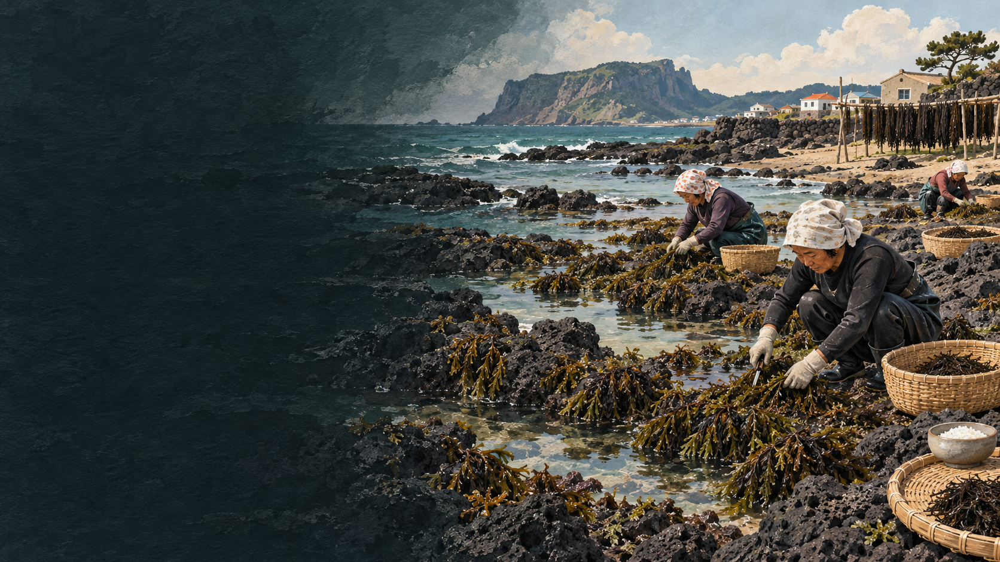

톳무침
데친 톳에 된장·식초나 양념을 더해 산뜻하게 먹습니다.
 제주에서는 이 재료를
제주에서는 이 재료를
제주 톳의 생활문화를 바탕으로 제작한 기록화 · 생성 이미지
톳은 조간대 바위에 붙어 자라는 갈조류입니다. 제철에 채취해 데치거나 삶아 무치고, 남는 것은 말려 두었다가 밥과 국, 두부에 섞어 먹었습니다. 반찬이면서 식량이 부족한 시기에 곡식을 보태는 재료였습니다.
흔해 보이는 해조류도 공동의 바다에서 나는 자원입니다. 자연산 채취는 마을어장 규칙과 생육 시기를 따라야 하며, 양식 톳은 종묘·시설·관리 노동을 거쳐 생산됩니다. 둘을 맛의 우열로만 나누지 않습니다.
생톳의 아삭함은 제철에 먹고, 말린 톳은 물에 불려 계절 밖의 밥상으로 되돌립니다.
바위에 붙어 자라는 톳의 크기와 상태를 봅니다.
어업권·채취 시기와 마을 규칙을 먼저 확인합니다.
모래와 이물질을 씻고 충분히 데치거나 삶습니다.
수분을 낮춰 부피를 줄이고 오래 보관합니다.
물에 불린 뒤 밥·무침·두부와 함께 씁니다.
생톳은 제철의 탱글하고 아삭한 결을 살리기 좋고, 말린 톳은 보관과 운반에 유리하며 불린 뒤에도 오독한 식감을 냅니다. 제품은 표시된 불림·가열 방법을 따르는 것이 안전합니다.
데친 톳에 된장·식초나 양념을 더해 산뜻하게 먹습니다.
불린 톳을 곡식과 함께 지어 바다 향과 양을 더합니다.
잘게 썬 톳을 두부와 섞어 식감과 영양을 보탭니다.
자연 조간대 바위와 얕은 바다
종묘를 붙인 시설과 관리 어장
물때에 맞춘 채취와 자원 관리
종묘·시설 관리, 수확과 선별
마을어장·채취 시기·생태 상태
생산자·양식장·관리 방식
제주 해양수산연구원은 조간대 톳 자생지의 경쟁 해조류 제거와 자원 증식 연구를 진행해 왔습니다. 톳의 지속가능성은 채취량만 줄이는 문제가 아니라 서식 환경과 마을 공동 관리, 양식 기술을 함께 살피는 일입니다.
해조류는 종류와 제품에 따라 불림·데침·삶기 지침이 다릅니다. 생채취물을 임의로 먹기보다 정식 유통 제품의 표시를 따르고, 채취 장소의 오염 가능성과 지역 규칙도 확인합니다.
유통명·제철·조리법은 지역과 시기에 따라 달라질 수 있어 현장 인터뷰와 최신 표시를 함께 확인해야 합니다.